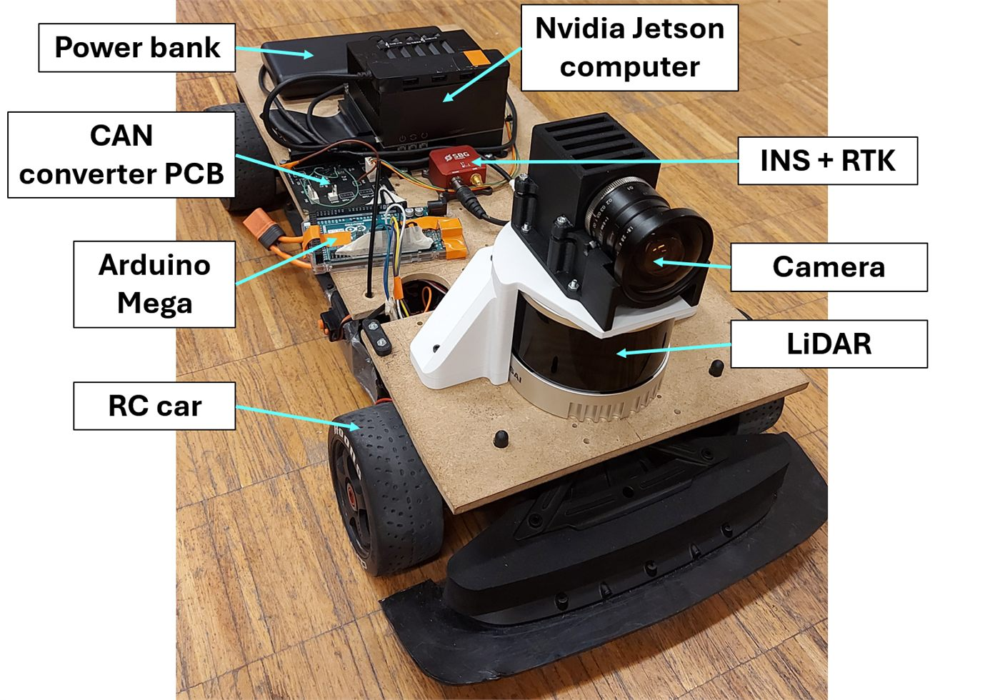
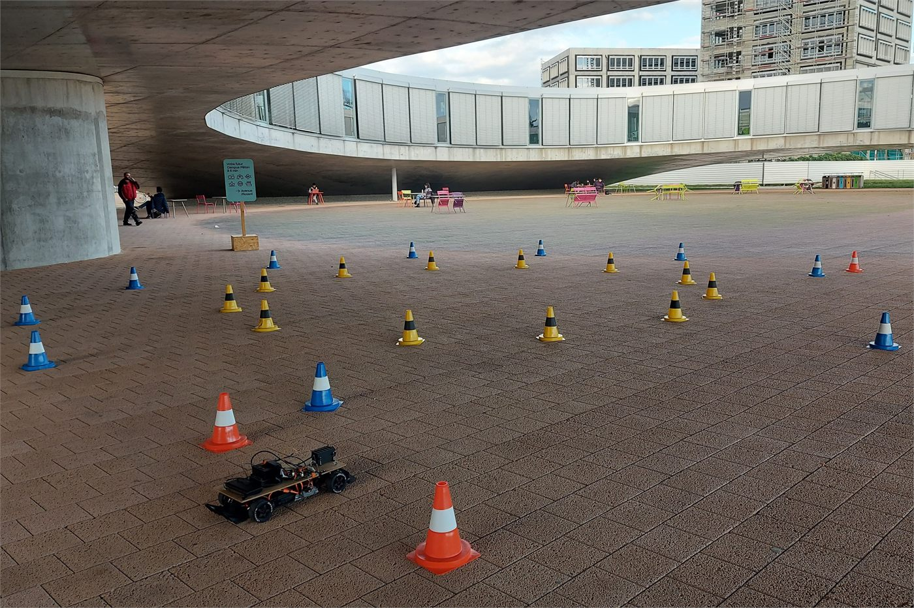
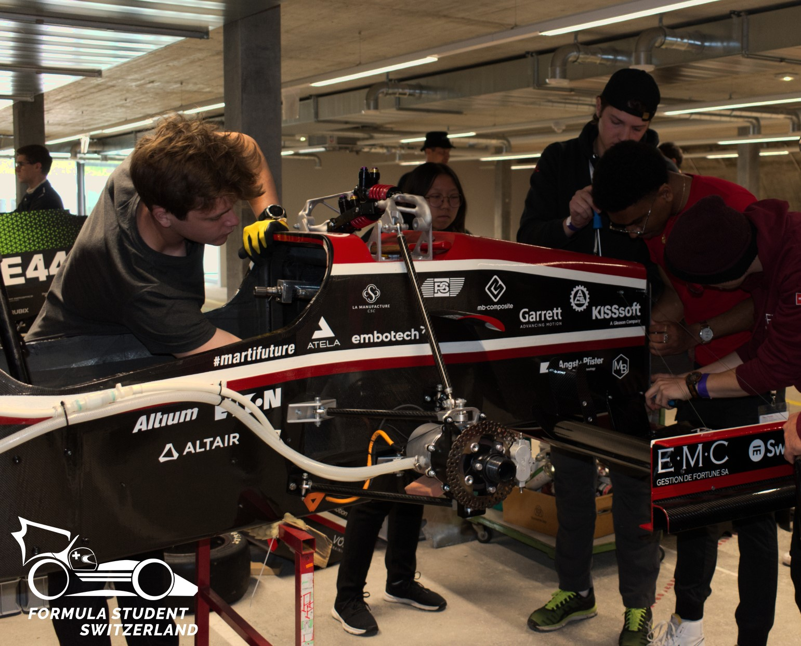

EPFL Racing Team
Driverless Hardware for the EPFL Racing Team
Hardware development for autonomous driving, covering both a reduced-risk RC test platform and the sensor integration needed on the full-scale Formula Student race car.

Context
The EPFL Racing Team builds a new electric race car every academic year and competes in Formula Student events across Europe. During the 2022-2023 season, one of the major technical ambitions was to introduce autonomous driving capability for the first time.
What I worked on
My role had two main parts. The first was building a safe and useful test bench for the perception and control stack, using an RC car fitted with the same kind of sensing and compute hardware that would later be used on the full-scale vehicle. The second was the structural integration of the sensor package on the race car itself while staying compliant with Formula Student rules.
The reduced-scale platform used an Nvidia Jetson, camera, LiDAR and INS/RTK unit, connected through an Arduino-based interface and CAN conversion hardware. On the race car, the compute and navigation hardware were integrated under the driver seat while the camera and LiDAR were mounted on the main hoop structure.
Outcome
- A working RC validation platform that let the software team test algorithms in a lower-risk environment.
- Successful full-scale sensor integration that passed competition scrutineering on the first attempt.
- Experience working inside a large multidisciplinary engineering team with a pace closer to industry than to a typical course project.
- International competition exposure and direct comparison with teams from other universities.
Gallery
Selected visuals
Hardware on the RC platform, the track, and the full-size car.


